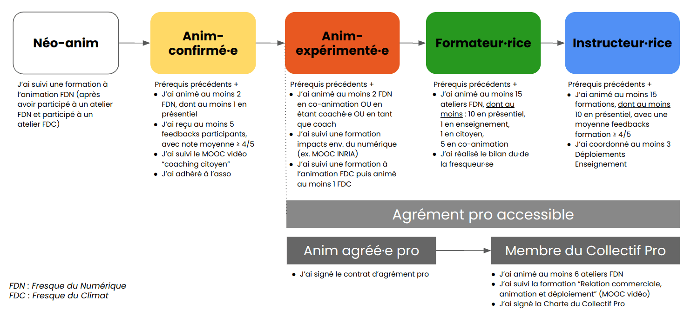

Parcours du Fresqueur du Numérique

Go !
J’ai suivi la formation à l’animation, je deviens donc animateur·ice de la Fresque du Numérique. Plus précisément, je suis Néo-Anim.
Afin d’être tenu au courant des nouvelles et opportunités d’animation, je peux rejoindre la communauté Slack, outil de communication interne des animateur·ice·s de la Fresque du Numérique (lien fourni dans l’email post-formation).
Je me prépare
Avant d’animer, il est conseillé de bien se préparer pour se sentir à l’aise et assurer une animation de qualité, sur le fond comme sur la forme. Ces étapes sont optionnelles mais bienvenues.
D’abord, je peux consolider mes connaissances et mieux découvrir l’association :
- Je révise le Guide de formation et parcours les Ressources pour animateur·ice (liens depuis le Slack, canal #général).
- Une question ? Je la poste sur Slack, sur le canal #discussion-générale (question d’ordre général) ou sur le canal #anims (question relative à l’animation en particulier).
- Je participe à la Foire Mensuelle de la Fresque du Numérique (en général, le 4ème mercredi du mois à 19h) où je peux poser mes questions.
Puis, pour commencer, je peux observer une Fresque du Numérique : en tant qu’observateur.rice, j’observe le déroulé de l’atelier pour comprendre comment ça fonctionne et monter en compétence. Je n’interviens pas pendant l’atelier.
Pour cela, je m’inscris en observateur·rice sur une opportunité d’observation postée sur le canal #anims par un.e anim. Je peux aussi repérer des opportunités d’observation sur le Planning des Ateliers citoyens bénévoles avant de contacter directement les anims concerné·e·s par un message direct sur le slack.
J'anime (et je débute)
Ça y est, je me sens prêt·e : je suis Néo-Anim et je veux animer une Fresque du Numérique !
Il y a plusieurs possibilités d’animation :
- Je co-anime un atelier avec un·e coach
- Je me positionne sur une session de coaching postée sur #anims. Le coach (qui est un·e Anim Confirmé·e) peut superviser 1 table ou plus.
- Si le coach gère plusieurs tables : en tant que co-animateur·ice coaché·e, je gère ma table tandis que le coach gère les parties en commun et me conseille au fil de l'animation.
- Si le coach supervise 1 table seulement, je me mets d’accord en amont avec lui·elle sur les parties à se répartir. Le coach gère a priori les phases principales de l'atelier, et le néo-anim intervient à certaines étapes.
- J’anime un atelier dans mon cercle privé : famille, amis... Je l’organise librement, nul besoin de validation.
- J’anime un atelier bénévole externe, pour une association, un syndicat, un festival...
- Je me positionne sur une proposition d’intervention bénévole postée sur #anims, venant d’une demande faite à l’association. Je peux aussi consulter le planning des demandes externes d'animations bénévoles (lien du doc depuis le Slack, canal #général). Une fois que je me suis positionné·e, je suis contacté·e par l’association pour confirmer les modalités.
- Je peux aussi moi-même animer un atelier que j’organise auprès d’une association, syndicat, festival... Pour cela, je peux partager un message directement sur #anims si j’ai besoin de plus d’anims, en me coordonnant si besoin avec l’équipe de la Fresque du Numérique. L’atelier pourra être payant pour de petits montants (par ex. 10€/participant) afin d’éviter le no-show des participants, et pourra être reversé à l’association.
- J’anime un atelier dans le cadre des ateliers écoles.
- Je me positionne sur une proposition d’intervention bénévole postée sur #anims et/ou sur #ateliers-écoles, dans le cadre des ateliers organisés auprès des établissements de l’enseignement supérieur.
- Je peux aussi moi-même animer un atelier que j’organise auprès d’un établissement de la formation initiale de mon réseau.
Dans tous les cas, une chose à ne pas oublier : je remplis bien le compteur après chacune de mes animations de Fresque du Numérique. Cela permet à l’association de suivre le nombre de personnes qui ont participé.
J'anime (et je suis confirmé·e)
Je peux devenir Anim confirmé·e dès lors que je respete les 3 critères suivants :
- Avoir animé ≥ 3 ateliers de Fresque du Numérique
- Avoir reçu ≥ 5 feedbacks post-Fresque du Numérique
- Avoir une note moyenne ≥ 4 sur ces feedbacks.
C’est bon ? Bravo, vous voilà Anim confirmé·e !
Être Anim confirmé ouvre de nouvelles possibilités :
1. J’anime un atelier citoyen, pour le grand public
Une fois anim confirmé·e, je peux animer un atelier citoyen, visible sur le site, bénévole, à destination du grand public. Sur le canal #anims-confirmés où je suis alors ajouté, je décide de quand animer mon atelier citoyen.
Une page de billetterie est alors créée pour l’atelier par l’équipe, puis je reçois le listing des participants en amont de l’atelier. Je suis totalement autonome sur l’organisation (lien de visio, emails) et l’animation de l’atelier.
2. Je coache un Néo-Anim.
- Je peux proposer une session de coaching à 1 ou plusieurs Néo-Anims à l’occasion d’un atelier citoyen ou d’un atelier bénévole externe, en m’accordant avec eux·elles en amont sur les parties assumées par chacun.
- Je peux coacher une intervention dans le cadre des Ateliers Écoles, en supervisant plusieurs tables. Je serai indemnisé 100€ HT/session par l’association.
S’agissant des ateliers au sein des entreprises et organisations publiques, ils ne sont pas gérés par l’association.
Ils sont assurés par des animateur·ice·s pro agréé·e·s par l’association. Les prérequis pour obtenir cet agrément sont indiqués sur la page "Entreprises et organisations publiques" de notre site. L’association n’a pas pour objet d’organiser elle-même des interventions dans des contextes professionnels.
Je forme
Les Formateur·ice·s sont parmi les animateur·rice·s les plus expérimenté·e·s.
Je peux devenir formateur·ice de la Fresque du Numérique une fois que je respecte les prérequis demandés :
- Avoir validé les prérequis pour être Anim confirmé.e
- Avoir animé au moins 10 Fresques du Numérique, dont au moins 2 en présentiel et 2 en distanciel
- Avoir suivi une formation à l'animation Fresque du Climat et avoir animé au moins 1 atelier
- Avoir suivi une formation sur les problématiques environnementales du secteur du numérique
- S'engager moralement à animer au moins une formation citoyenne par trimestre
- Souhaiter devenir formateur·ice (démarche proactive votre part)
Une fois formateur·ice :
- Je peux organiser des sessions de formation.
- Sur le canal #formateurs où je suis alors ajouté, je décide de quand organiser ma session de formation.
- Une session de formation peut être indemnisée 70€ HT par l’association.
- Je peux coordonner des Ateliers Écoles.
- Je peux accepter une opportunité de coordination pour des Ateliers Écoles. Je suis alors le point de contact privilégié de l'école pour la co-organisation de l’animation, j’organise les Fresques découvertes et les Formations, ainsi que la logistique le jour J.
- Ce rôle de coordination est indemnisé, selon une grille précisée dans le Guide de coordination (à venir).
Enfin, Aurélien et Yvain sont pour le moment les 2 seuls Instructeurs (pouvant former des formateur·ice·s à eux-mêmes animer des sessions de formation).
Mais encore ?
J'adhère à l’association
Toutes les personnes formées à l'animation de la Fresque du Numérique sont les bienvenues dans l’association La Fresque du Numérique :)
Pour adhérer, assister aux moments forts de l’association (Assemblée générale…) et contribuer à son développement,
c'est par ici et à prix libre : https://www.helloasso.com/associations/la-fresque-du-numerique/adhesions/adhesion-a-l-association.